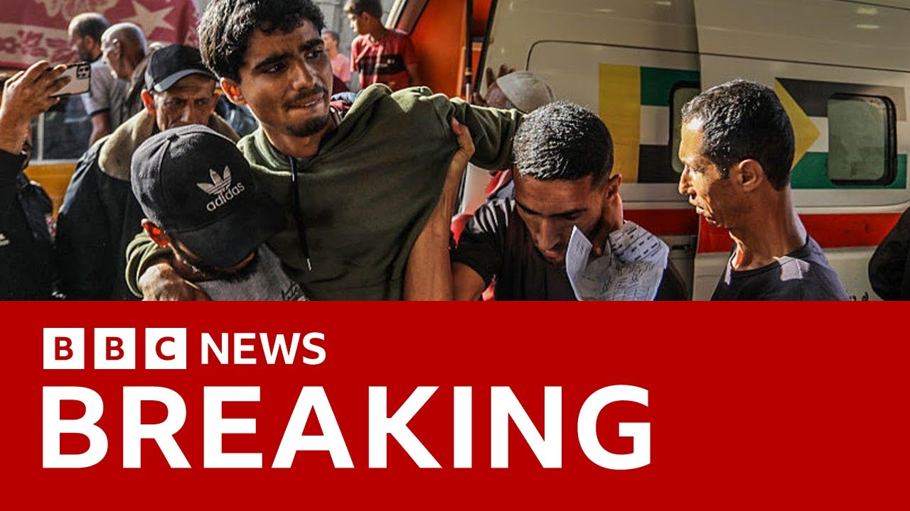

【加沙救援人员称以军坦克在援助中心附近开火，造成至少26人死亡 | BBC新闻】
Summary: Reports from Gaza say at least 26 Palestinians were killed and many wounded after Israeli tank fire hit people near a US-funded aid center in Rafah. Injured victims were taken to NASA hospital, with graphic images emerging. A journalist reported thousands gathered at the aid point when tanks opened fire. No Israeli army comment yet. The incident follows failed ceasefire talks, with Hamas demanding a permanent truce, Israeli withdrawal, and aid guarantees—conditions not in the current proposal.
摘要： 加沙报道称，以军坦克在拉法美国资助的援助中心附近开火，造成至少26名巴勒斯坦人死亡，多人受伤。伤者被送往NASA医院，画面触目惊心。一名记者称，数千人聚集在援助点附近时以军开火。以军尚未回应。此次事件发生前，停火谈判破裂，哈马斯要求永久停火、以军撤出加沙及援助保障，但这些条件未包含在当前提案中。

⏱️ Estimated Reading Time: 6 min
Reports from Gaza say at least 26 Palestinians have been killed and many more wounded after Israeli tank fire hit people near a US funded aid distribution center in the southern city of Rafa.
加沙报道称，以军坦克在南部城市拉法一处美国资助的援助分发中心附近开火，造成至少26名巴勒斯坦人死亡，多人受伤。
Now in the last half an hour we've had these pictures in from the area.
过去半小时内，我们收到了来自该地区的这些画面。
They show injured Palestinians being taken to the NASA hospital in Harunis.
画面显示受伤的巴勒斯坦人被送往哈鲁尼斯的NASA医院。
Now, many of the images we've seen show people with injuries which appear too graphic to show.
我们看到的许多画面显示伤者伤势过于触目惊心，不便展示。
A local journalist told the BBC thousands of people have gathered near the US funded aid point when the Israeli tanks opened fire.
一名当地记者告诉BBC，以军坦克开火时，数千人聚集在美国资助的援助点附近。
There's been no comment yet from the Israeli army.
以色列军方尚未发表评论。
Now, the incident comes hours after hopes for a new ceasefire and hostage release deal in Gaza again faded with Hamas and Israel remaining at odds over the conditions of the latest USbacked proposal.
此次事件发生前数小时，加沙新一轮停火及人质释放协议的希望再次破灭，哈马斯与以色列仍对美方最新提案的条件存在分歧。
Hamas, which is a prescribed terror organization in the US, UK, and EU, repeated its demands for a permanent truce, a complete Israeli withdrawal from Gaza, and guarantees for the continuous flow of humanitarian aid.
被美国、英国和欧盟列为恐怖组织的哈马斯重申其要求：永久停火、以军完全撤出加沙，并保障人道主义援助持续进入。
None of these are in the deal on the table.
当前提案未包含这些条件。
Well, our Middle East regional editor, Sebastian Usher, is in Jerusalem.
我们的中东地区编辑塞巴斯蒂安·厄舍正在耶路撒冷。
He told me what was known first about the incident at the aid distribution point.
他向我讲述了援助分发点事件的最新情况。
Well, the latest we're hearing as far as figures are concerned is from a Red Cross field hospital saying that at least 26 people have been killed and 150 wounded.
目前从红十字野战医院获悉的最新数字是至少26人死亡、150人受伤。
The reports that we were getting earlier say that thousands of Palestinians are gathered near this aid distribution point in Ratha in the south of Gaza early in the morning around 4:30 in the morning and medics uh other local sources say that Israeli tanks moved near and then opened fire and that that fire is what was responsible for the deaths and the injuries in the crowd.
早前报道称，凌晨4:30左右，数千名巴勒斯坦人聚集在加沙南部拉法的援助分发点附近，医护人员和其他当地消息源称以军坦克靠近后开火，造成人群死伤。
Uh we've seen pictures again harrowing images of dead and wounded Palestinians being taken on donkey carts to the nearest hospitals but are still functioning in order to receive treatment.
我们看到令人痛心的画面：死伤的巴勒斯坦人用驴车送往仍在运作的最近医院接受治疗。
We've contacted the IDF for a statement for a comment.
我们已联系以色列国防军寻求回应。
We haven't yet heard back from them as to what happened.
尚未收到其关于事件经过的回复。
But this is another deadly incident as we've seen over the past few days as this new aid mechanism has begun to work in Gaza.
这是过去几天新援助机制在加沙运作期间发生的又一起致命事件。
uh it is a USfunded uh group that is doing this rather than the UN and other aid agencies which has said that they don't want to be part of this initiative which they see as not optimum for the needs of the people in Gaza and Israel was there to provide security Israeli troops.
此次行动由美国资助的团体而非联合国等援助机构执行，后者认为该机制不符合加沙民众需求。以军本应提供安全保障。
So this is another sign that that distribution mechanism doesn't seem to be working as everyone would have been hoping it it it would have done by now.
这表明援助分发机制未如各方期望的那样有效运作。
And meanwhile, Hamas and Israel remain at odds over this latest US back proposal for a ceasefire.
与此同时，哈马斯与以色列仍对美方最新停火提案存在分歧。
Yes, they do.
确实如此。
I mean, Hamas took a couple of days to deliver its response to the latest proposal, essentially uh mediated by the US envoy, Steve Witco.
哈马斯花费数日才回应由美国特使史蒂夫·威特科斡旋的最新提案。
Israel had already said that it had signed up and agreed to the deal.
以色列已表示签署并同意该协议。
Hamas essentially said that it had responded positively and responsibly and but it wasn't a rejection but they then produced a breakdown of the conditions that they are asking which is is somewhat different from what we've seen as far as the proposal appears to have been uh uh laid out.
哈马斯称其回应积极且负责任，并非拒绝，但随后提出的条件与已知提案内容有所出入。
The key sticking point that there's been for so long in trying first to get that six week ceasefire that did finally take place and to try and get another ceasefire in place since it collapsed is over Hamas's insistence that any ceasefire negotiations, any talks once it is implemented should lead and should have guarantees right at the start to a total withdrawal of Israeli troops and a permanent end to the war in Gaza.
长期以来的关键分歧在于哈马斯坚持要求任何停火谈判或协议实施时，必须从一开始保证以军完全撤出加沙并永久结束战争。
That's something that the Israeli government isn't ready to do as as far as the situation is at the moment.
以政府目前尚未准备接受该条件。
that the pressure is certainly building on both sides to come to a compromise and to ensure that a ceasefire and the release of the remaining hostages does be begin to take
双方正面临越来越大压力，需达成妥协以确保停火及剩余人质释放得以推进。